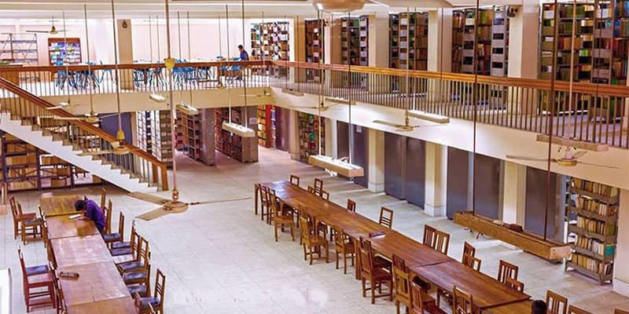

Professor Dr. Shireen Akhter
University of Chittagong
100 years of Mujib
Celebrating 100 years of Mujib, the Father of the nation.
At a glance
1754 acres
areas
10
Faculties
54
Departments/Institutes
27550
Students
907
Faculty members
2046
Non Academic Staffs
Overview
University of Chittagong (CU) is devoted to excellence in teaching, learning, and research to ensure creative endeavor for reaching a global height in higher education.
Health Care
Care for each university employee and student in precision health 24/7 offering services of medicines, physiotherapy, rehabilitation, and psychological counseling.
Achievement
Our members achieved the prestigious Nobel Prize, Ekushe-Padak, Bangla Academy Award and other notable national and international awards.
Faculties/Disciplines
Arts and Humanities
Visit websiteScience
Visit websiteBusiness Administration
Visit websiteSocial Science
Visit websiteLaw
Visit websiteBiology Science
Visit websiteEngineering
Visit websiteEducation
Visit websiteMarine Sciences and Fisheries
Visit websiteMedicine
Visit websiteLibrary
Over 3,50,000 volumes of books, 40,000 e-Books, and journals for different Faculties, Centers and Institutes make it more enriched
Rare Collections
Consisting of various old manuscripts written in Bengali, Sanskrit, Arabic, Persian, Urdu of about 600, which were written during the period 1872 to 1953
Accessible E-Learning Center
A center with software and hardware facilities, dictionary, digital talking books, e-books, and many Braille books for the physically-challenged students
Bangabandhu Corner
Including many national and international books written on the Father of the Nation Bangabandhu Sheikh Mujibur Rahman
Research

Research Highlight
We have student exchange and research collaboration program with a number of universities abroad and also academia-industry collaboration.
Media Lab
The media lab ensures the opportunity for the students to foster the advancement of convergence media and highlights the university achievements.
Experimental Labs
A good number of world-class research and experimental laboratories enrich our teaching and learning methodologies.